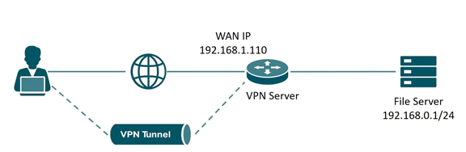

La société Belletable
Contexte
Fondée en 2020 par deux frères, Pierre et Marc Bartholi, cette entreprise est née d'un
projet familial. Pierre, ancien commercial licencié, a investi l'intégralité de son
indemnité de départ pour lancer l'activité. Il détient 55 % des parts, son épouse Martine en
possède 10 %, tandis que Marc et sa femme Laurence détiennent respectivement 25 % et 10 %.
Le capital initial s'élève à 100 000 €.
BELLETABLE a pour objet la vente et la location de vaisselle, couverts et accessoires pour dresser de belles tables, d'où le nom choisi. L'entreprise s'est implantée à Paris et a démarré avec quatre salariés. Les deux frères ont travaillé gratuitement la première année, et les commerciaux alternaient entre la boutique et le démarchage.
Dès la première année, la société réalise un chiffre d'affaires de 750 000 € avec 90 000 € de bénéfice avant impôts, ce qui permet une première expansion. L'équipe passe alors à 10 salariés. La deuxième année confirme le succès, avec un chiffre d'affaires de 1,8 million d'euros et un bénéfice de 150 000 €.
Au cours de la troisième année, Pierre devient Directeur Général et Marc Directeur Marketing, tous deux salariés. Leurs épouses rejoignent aussi l'entreprise à des postes clés. Face à la croissance, 16 nouveaux employés sont recrutés.
Aujourd'hui, BELLETABLE compte 60 salariés, dont 55 à temps plein. L'entreprise connaît une croissance à deux chiffres et atteint un chiffre d'affaires de 5,8 millions d'euros. Sa clientèle est variée : restaurants, traiteurs, organisateurs d'événements, associations, etc. Depuis un an, elle propose un service haut de gamme complet incluant livraison, installation, service et nettoyage, un service unique sur le marché.
Une étude de marché prévoit que cette nouvelle offre devrait générer entre 800 000 € et 1 million d'euros de chiffre d'affaires supplémentaire. L'entreprise s'est équipée progressivement en matériel informatique pour soutenir ses activités croissantes.
BELLETABLE a pour objet la vente et la location de vaisselle, couverts et accessoires pour dresser de belles tables, d'où le nom choisi. L'entreprise s'est implantée à Paris et a démarré avec quatre salariés. Les deux frères ont travaillé gratuitement la première année, et les commerciaux alternaient entre la boutique et le démarchage.
Dès la première année, la société réalise un chiffre d'affaires de 750 000 € avec 90 000 € de bénéfice avant impôts, ce qui permet une première expansion. L'équipe passe alors à 10 salariés. La deuxième année confirme le succès, avec un chiffre d'affaires de 1,8 million d'euros et un bénéfice de 150 000 €.
Au cours de la troisième année, Pierre devient Directeur Général et Marc Directeur Marketing, tous deux salariés. Leurs épouses rejoignent aussi l'entreprise à des postes clés. Face à la croissance, 16 nouveaux employés sont recrutés.
Aujourd'hui, BELLETABLE compte 60 salariés, dont 55 à temps plein. L'entreprise connaît une croissance à deux chiffres et atteint un chiffre d'affaires de 5,8 millions d'euros. Sa clientèle est variée : restaurants, traiteurs, organisateurs d'événements, associations, etc. Depuis un an, elle propose un service haut de gamme complet incluant livraison, installation, service et nettoyage, un service unique sur le marché.
Une étude de marché prévoit que cette nouvelle offre devrait générer entre 800 000 € et 1 million d'euros de chiffre d'affaires supplémentaire. L'entreprise s'est équipée progressivement en matériel informatique pour soutenir ses activités croissantes.
Entretien - Problématiques informatiques
Selon Pierre Bartholi, directeur de Belletable, le système d'information de cette dernière
est obsolète et inadapté.
Le parc informatique comprend 45 PC fixes et 5 portables, souvent en fin de vie, avec des imprimantes limitées et aucun PC de secours, causant des interruptions en cas de panne. Les 12 commerciaux, en déplacement, manquent d'équipements adaptés, utilisant parfois leurs propres PC portables. L'infrastructure réseau, avec des concentrateurs, un commutateur et un câblage catégorie 4 obsolètes, entraîne lenteurs et instabilités.
Un unique serveur, mal optimisé, gère les fichiers et une application de location. La connexion Internet via une box Free est stable mais ralentie par le réseau interne, et le Wi-Fi a été désactivé après un piratage. La maintenance est assurée par Jean-Claude, technicien polyvalent, et Julien, apprenti, avec l'appui d'InfoServices, qui a conduit un audit soulignant l'absence de sauvegardes et le manque de compétences internes.
Une décision collégiale des actionnaires vise à moderniser le SI, avec l'achat de serveurs, PC, imprimantes, commutateurs, et un nouveau câblage, tout en planifiant des sauvegardes sécurisées et des formations pour Jean-Claude. D'autres besoins, comme une application de réservation et un catalogue interactif, sont en réflexion. InfoServices supervisera les installations, et un suivi évaluera l'évolution du SI.
Le parc informatique comprend 45 PC fixes et 5 portables, souvent en fin de vie, avec des imprimantes limitées et aucun PC de secours, causant des interruptions en cas de panne. Les 12 commerciaux, en déplacement, manquent d'équipements adaptés, utilisant parfois leurs propres PC portables. L'infrastructure réseau, avec des concentrateurs, un commutateur et un câblage catégorie 4 obsolètes, entraîne lenteurs et instabilités.
Un unique serveur, mal optimisé, gère les fichiers et une application de location. La connexion Internet via une box Free est stable mais ralentie par le réseau interne, et le Wi-Fi a été désactivé après un piratage. La maintenance est assurée par Jean-Claude, technicien polyvalent, et Julien, apprenti, avec l'appui d'InfoServices, qui a conduit un audit soulignant l'absence de sauvegardes et le manque de compétences internes.
Une décision collégiale des actionnaires vise à moderniser le SI, avec l'achat de serveurs, PC, imprimantes, commutateurs, et un nouveau câblage, tout en planifiant des sauvegardes sécurisées et des formations pour Jean-Claude. D'autres besoins, comme une application de réservation et un catalogue interactif, sont en réflexion. InfoServices supervisera les installations, et un suivi évaluera l'évolution du SI.
Besoins de modernisation - Parc informatique
L'entreprise dispose d'un réseau informatique vieillissant et hétérogène. Le câblage réseau
est de catégorie 4 (UTP), limité à 10 Mb/s, avec de nombreuses prises RJ45 cassées ou
défectueuses. Le bâtiment est équipé de trois bandeaux de brassage de 24 ports, répartis
entre le rez-de-chaussée et le 1er étage.
Les postes informatiques sont très anciens, fonctionnant sous Windows XP, Vista, ou Windows 7, avec des composants obsolètes (Pentium 4, disques durs IDE ou ATA, moniteurs faibles en résolution). Aucun matériel n'est sous garantie. L'interface réseau est limitée au 10/100 Mbps, et les ports USB sont majoritairement en version 1.1 ou 2.0.
L'entreprise utilise un serveur DELL T320, sous Windows Server 2003 R2, doté de 4 Go de RAM et de deux disques SAS en RAID 1. Le serveur héberge l'application métier Gestimum, utilisée pour la gestion des stocks, commandes et livraisons. Les postes de comptabilité disposent de la suite CIEL.
Le réseau repose sur une infrastructure non sécurisée : un commutateur non administrable, des concentrateurs, et un adressage IP en classe C délivré dynamiquement par la box internet (plage : 192.168.0.100 à 0.199). Le serveur est en 192.168.0.20, l'imprimante en 192.168.0.50, et le photocopieur en 192.168.0.90.
Enfin, la sécurité logicielle est faible : l'antivirus utilisé est Microsoft Security Essentials, plus mis à jour sur les postes sous XP. Les versions de Microsoft Office varient selon les machines, allant de 2003 à 2010.
Les postes informatiques sont très anciens, fonctionnant sous Windows XP, Vista, ou Windows 7, avec des composants obsolètes (Pentium 4, disques durs IDE ou ATA, moniteurs faibles en résolution). Aucun matériel n'est sous garantie. L'interface réseau est limitée au 10/100 Mbps, et les ports USB sont majoritairement en version 1.1 ou 2.0.
L'entreprise utilise un serveur DELL T320, sous Windows Server 2003 R2, doté de 4 Go de RAM et de deux disques SAS en RAID 1. Le serveur héberge l'application métier Gestimum, utilisée pour la gestion des stocks, commandes et livraisons. Les postes de comptabilité disposent de la suite CIEL.
Le réseau repose sur une infrastructure non sécurisée : un commutateur non administrable, des concentrateurs, et un adressage IP en classe C délivré dynamiquement par la box internet (plage : 192.168.0.100 à 0.199). Le serveur est en 192.168.0.20, l'imprimante en 192.168.0.50, et le photocopieur en 192.168.0.90.
Enfin, la sécurité logicielle est faible : l'antivirus utilisé est Microsoft Security Essentials, plus mis à jour sur les postes sous XP. Les versions de Microsoft Office varient selon les machines, allant de 2003 à 2010.

La société InfoServices
Notre société
Créée en 2010 en tant que SARL avec un capital de 10 k€, InfoServices est devenue une S.A.
en 2022 avec un capital de 250 k€. Son chiffre d'affaires, en croissance à deux chiffres, a
dépassé 35 M€ en 2022 avec 175 collaborateurs, et vise 50 M€ en 2023 avec 250 employés.
Classée dans le Top 100 des ESN françaises, l'entreprise propose des services dans les
domaines du risque, Big Data, sécurité, réseaux, infrastructures et développement, avec des
offres comme le pilotage de projet, la formation et le management de transition.
Nos missions
Fondée pour se démarquer dans un marché numérique concurrentiel marqué par la pression sur
les prix et la domination des grands acteurs, InfoServices ambitionne de révolutionner le
conseil et les services numériques. En misant sur une organisation stratégique, le
recrutement de consultants reconnus et un engagement fort pour la qualité, l'entreprise se
positionne comme une « Entreprise de Services du Numérique de Nouvelle Génération ».
Ses clients la choisissent pour l'excellence de ses prestations, ses expertises diversifiées et sa passion entrepreneuriale.
Ses clients la choisissent pour l'excellence de ses prestations, ses expertises diversifiées et sa passion entrepreneuriale.
Notre ADN
InfoServices, animée par une volonté de réinventer le conseil et les services numériques,
s'appuie sur trois valeurs fondamentales : l'Entrepreneuriat, qui promeut le leadership et
la responsabilisation des collaborateurs pour stimuler le développement ; l'Expertise, qui
exige une spécialisation pointue dans les technologies et métiers pour garantir une qualité
supérieure ; et l'Excellence, qui se traduit par un service client irréprochable, mêlant
professionnalisme et humanité.
Ces valeurs, inspirées par des figures comme Steve Jobs et Nelson Mandela, visent à attirer des talents passionnés pour transformer le secteur.
Ces valeurs, inspirées par des figures comme Steve Jobs et Nelson Mandela, visent à attirer des talents passionnés pour transformer le secteur.
Notre organisation
L'organisation d'InfoServices repose sur quatre directions : la Direction des Opérations,
qui regroupe consultants et responsables pour délivrer les services ; la Direction du
Recrutement et RH, axée sur le recrutement et la gestion des carrières ; la Direction
Administrative et Financière, qui sécurise les ressources ; et la Direction Commerciale, qui
fidélise et conquiert les clients. La Direction Générale pilote les trois premières, tandis
que la présidence gère le développement commercial. La Direction des Opérations, cœur de
l'activité, s'appuie sur des Practices (centres d'expertise) et des offres transverses.
Nos services
Les Practices, unités spécialisées pilotées comme des centres de profit, incluent BI et Big
Data (décisionnel, data science), Sécurité (gouvernance, audits, certifications comme ISO
27001), Infrastructures (architecture technique, administration, sauvegardes) et
Développement (conception et maintenance d'applications). Les offres transverses, comme
l'architecture fonctionnelle, la qualité logicielle et le management de projets, complètent
ces expertises en s'intégrant aux Practices pour répondre à des besoins spécifiques des
clients.

Situation 1 - Systèmes
Situation
Fondée en 2020 par deux frères, Pierre et Marc Bartholi, cette entreprise est née d'un projet familial. Pierre, ancien commercial licencié, a investi l'intégralité de son indemnité de départ pour lancer l'activité. Il détient 55 % des parts, son épouse Martine en possède 10 %, tandis que Marc et sa femme Laurence détiennent respectivement 25 % et 10 %. Le capital initial s'élève à 100 000 €.
Evolution
Le parc informatique de Belletable a été modernisé. Les PC fixes et portables, désormais
performants, répondent aux besoins des salariés et commerciaux, avec des unités de secours
réduisant les interruptions. L'infrastructure réseau, passée de vétuste à moderne avec un
câblage catégorie 6 et des commutateurs Gigabit, offre une meilleure connectivité. La
virtualisation des serveurs marque un progrès, en permettant de diversifier la gamme de
services offerts. La sécurité reste critique, sans sauvegardes dans les deux cas, mais le
second document propose des solutions plus précises. La maintenance repose sur les mêmes
ressources limitées, avec des besoins de formation toujours d'actualité. Les ambitions
applicatives se sont étoffées, passant de solutions ponctuelles à un écosystème numérique
intégré.
Audit
Le système d'information actuel est dépassé : équipements récupérés, serveurs basiques,
réseau
obsolète et Wi-Fi vulnérable. Malgré l'accompagnement d'InfoServices dès le départ,
l'infrastructure
ne répond plus aux besoins de l'entreprise.
Préconisations
Avec un parc vieillissant (45 PC fixes, 5 portables) et des problèmes de connectivité,
BELLETABLE
reconnaît la nécessité de moderniser son SI. Un technicien polyvalent gère les tâches
quotidiennes,
mais des compétences externes sont requises pour assurer sécurité et performance.
Solution
Mise en place d'une solution d'adressage dynamique (DHCP) pour gérer les adresses IP de
manière
centralisée et automatisée. Cela permet de simplifier la gestion des adresses IP, d'éviter
les
conflits d'adresses et de faciliter l'ajout de nouveaux appareils au réseau.

Situation 2 - Réseaux
Situation
Fondée en 2020 par deux frères, Pierre et Marc Bartholi, cette entreprise est née d'un projet familial. Pierre, ancien commercial licencié, a investi l'intégralité de son indemnité de départ pour lancer l'activité. Il détient 55 % des parts, son épouse Martine en possède 10 %, tandis que Marc et sa femme Laurence détiennent respectivement 25 % et 10 %. Le capital initial s'élève à 100 000 €.
Evolution
Extension de l'activité à Marne-la-Vallée a nécessité la mise en place d'une infrastructure
informatique identique à celle du siège social pour garantir la fluidité des opérations, la
gestion centralisée des données et la simplicité de maintenance. L'enjeu majeur était
d'assurer une continuité des services entre les deux sites tout en maintenant la sécurité et
la fiabilité des accès aux ressources partagées.
Audit
Le système d'information actuel est dépassé : équipements récupérés, serveurs basiques,
réseau
obsolète et Wi-Fi vulnérable. Malgré l'accompagnement d'InfoServices dès le départ,
l'infrastructure
ne répond plus aux besoins de l'entreprise.
Solution
La solution retenue est l'implémentation d'un service de réseau privé virtuel (VPN) sous
Wireguard.
